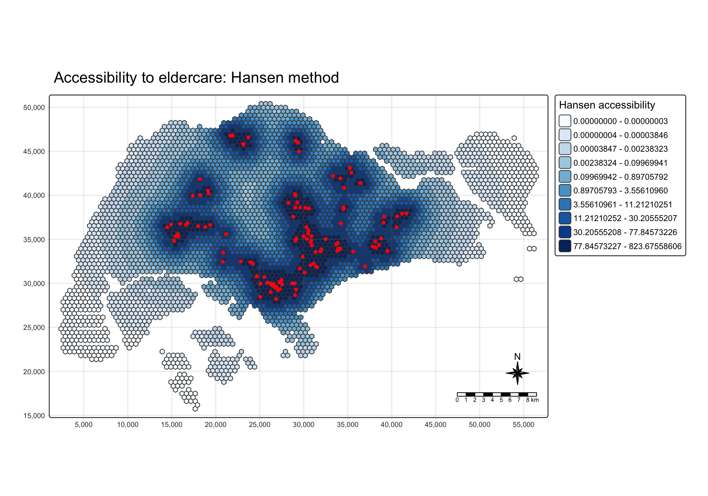
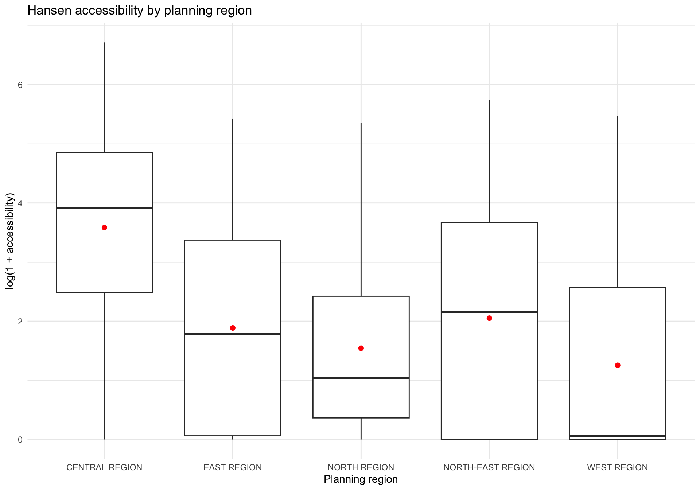
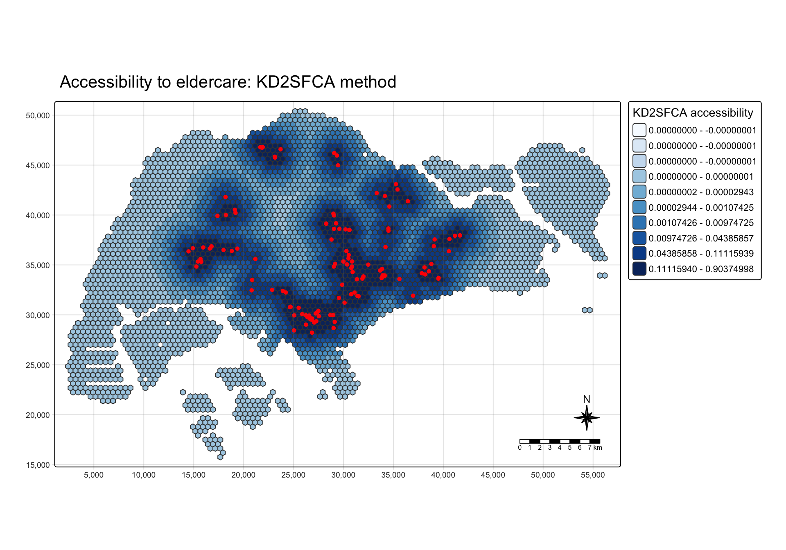
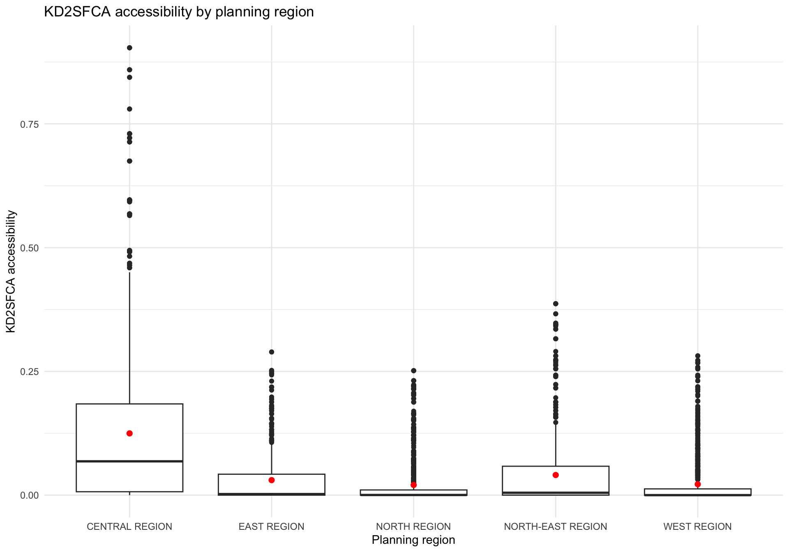
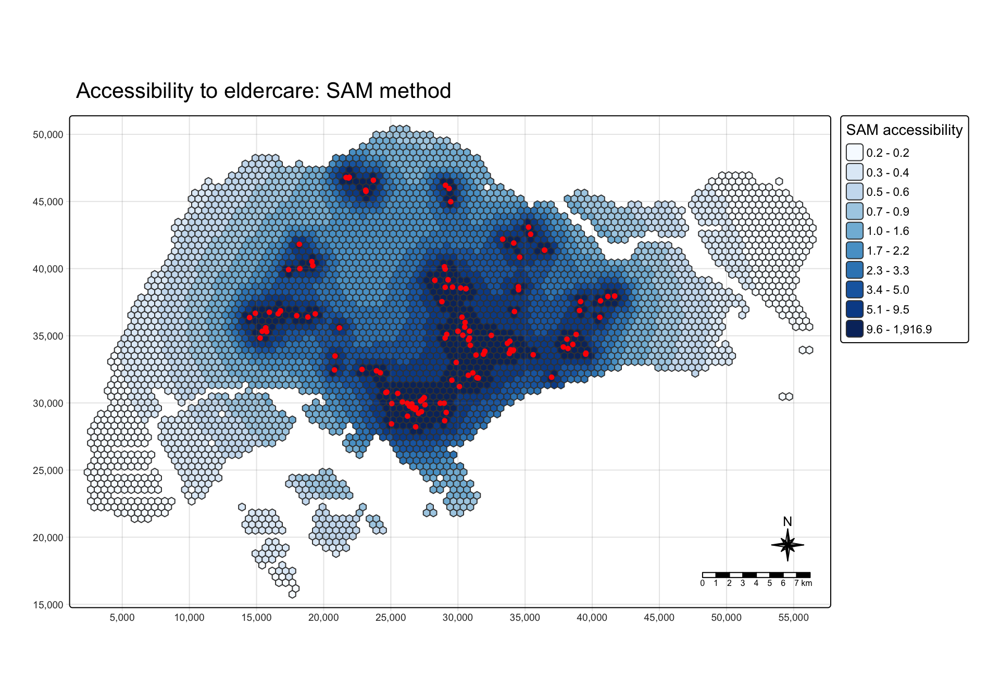
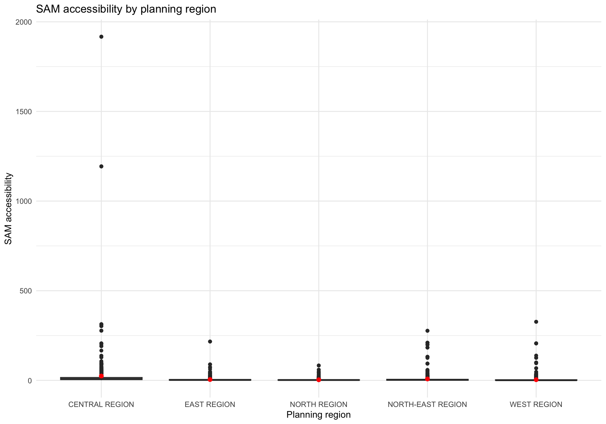
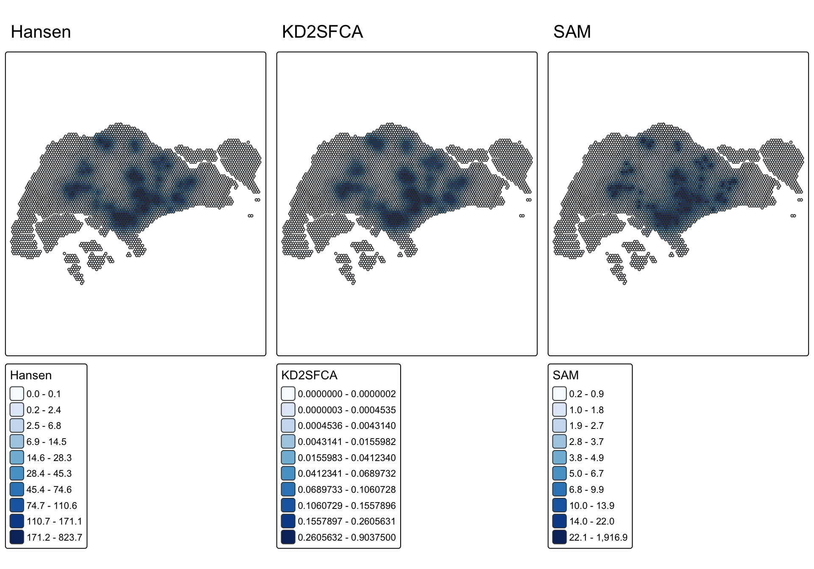

pacman::p_load(
tmap, SpatialAcc, sf, ggstatsplot, reshape2, tidyverse
)Modelling Geographical Accessibility
Hands-on Exercise 7
17 Modelling Geographical Accessibility
17.1 Overview
This exercise follows Chapter 17. The aim is to compare three ways of measuring access to eldercare services in Singapore: Hansen accessibility, KD2SFCA, and the Spatial Accessibility Measure (SAM).
The workflow has four parts:
- import and prepare the polygon, hexagon, service-point, and distance data;
- calculate accessibility from a common demand-capacity setup;
- map each accessibility surface and compare the distributions by planning region;
- check whether the three methods highlight similar or different areas.
NoteReading the results
The demand and capacity values in this teaching exercise are set to 100, following the class example. The output therefore compares the behaviour of the accessibility methods rather than estimating observed service need. The local OD matrix is reconstructed from centroid-to-service distances because the supplied local data bundle did not include the original prepared OD_Matrix file.
17.2 Learning outcomes
By the end of this exercise, I should be able to:
- import polygon and point data with
sf; - check and update the CRS before using distances;
- clean spatial attributes and derive demand and capacity fields;
- tidy a long OD table into a distance matrix;
- calculate Hansen, KD2SFCA, and SAM accessibility;
- communicate accessibility patterns with maps, boxplots, and a method comparison.
17.3 Getting started
TipMy observation
Accessibility is not just a map of service locations. It combines where demand is located, how much capacity is available, and how the distance between origins and destinations is weighted. The same service points can therefore produce different surfaces under different models.
18 The data
18.1 Geospatial data
The exercise uses three spatial layers:
MP14_SUBZONE_NO_SEA_PL: Singapore subzone boundaries;hexagons: 500-metre hexagonal origin areas covering the study extent;ELDERCARE: eldercare service locations.
The boundary and service-point layers are kept as separate spatial objects. The hexagons represent demand locations, while the eldercare points represent destinations.
18.2 Aspatial data
OD_Matrix.csv stores the origin-destination distances in long format. The fields follow the teacher’s structure: origin ID, destination ID, entry cost, network cost, exit cost, and total cost. The local file was generated from the centroid of each hexagon to each eldercare point in SVY21 metres. The total cost is therefore a straight-line distance proxy rather than an observed road-network distance.
19 Packages
20 Geospatial data wrangling
20.1 Importing geospatial data
The code follows the Chapter 17 import pattern. The three layers are read with st_read() from the geospatial data folder.
mpsz <- st_read(
"data/geospatial/MP14_SUBZONE_NO_SEA_PL.geojson",
quiet = TRUE
)
hexagons <- st_read(
"data/geospatial/hexagons.geojson",
quiet = TRUE
)
eldercare <- st_read(
"data/geospatial/ELDERCARE.geojson",
quiet = TRUE
)mpszSimple feature collection with 332 features and 13 fields
Geometry type: MULTIPOLYGON
Dimension: XY
Bounding box: xmin: 103.6057 ymin: 1.158699 xmax: 104.0885 ymax: 1.470775
Geodetic CRS: WGS 84
First 10 features:
OBJECTID SUBZONE_NO SUBZONE_N SUBZONE_C CA_IND PLN_AREA_N
1 676 12 DEPOT ROAD BMSZ12 N BUKIT MERAH
2 677 2 BUKIT MERAH BMSZ02 N BUKIT MERAH
3 678 3 CHINATOWN OTSZ03 Y OUTRAM
4 679 4 PHILLIP DTSZ04 Y DOWNTOWN CORE
5 680 5 RAFFLES PLACE DTSZ05 Y DOWNTOWN CORE
6 681 4 CHINA SQUARE OTSZ04 Y OUTRAM
7 682 10 TIONG BAHRU BMSZ10 N BUKIT MERAH
8 683 12 BAYFRONT SUBZONE DTSZ12 Y DOWNTOWN CORE
9 684 4 TIONG BAHRU STATION BMSZ04 N BUKIT MERAH
10 685 6 CLIFFORD PIER DTSZ06 Y DOWNTOWN CORE
PLN_AREA_C REGION_N REGION_C INC_CRC FMEL_UPD_D
1 BM CENTRAL REGION CR C22DED671DE2A940 20191223152313
2 BM CENTRAL REGION CR 085EF219A5A1AEAD 20191223152313
3 OT CENTRAL REGION CR EF2B9A91AF49E025 20191223152313
4 DT CENTRAL REGION CR 615D4EDDEF809F8E 20191223152313
5 DT CENTRAL REGION CR 72107B11807074F4 20191223152313
6 OT CENTRAL REGION CR B609DF5587626C8F 20191223152313
7 BM CENTRAL REGION CR A0FB4B68155D164A 20191223152313
8 DT CENTRAL REGION CR 197F5E664DA4D5E1 20191223152313
9 BM CENTRAL REGION CR 91FFE927ABE3E4DB 20191223152313
10 DT CENTRAL REGION CR 945CC212CA80626F 20191223152313
SHAPE.AREA SHAPE.LEN geometry
1 442297.51 4281.6673 MULTIPOLYGON (((103.8145 1....
2 411722.83 3074.9632 MULTIPOLYGON (((103.8221 1....
3 587222.68 4297.5999 MULTIPOLYGON (((103.8438 1....
4 39437.94 871.5549 MULTIPOLYGON (((103.8496 1....
5 188767.49 1872.7522 MULTIPOLYGON (((103.8525 1....
6 133006.94 1605.2797 MULTIPOLYGON (((103.8486 1....
7 448127.58 3303.2149 MULTIPOLYGON (((103.8311 1....
8 521200.52 2897.1264 MULTIPOLYGON (((103.8589 1....
9 350787.56 2506.6879 MULTIPOLYGON (((103.8283 1....
10 261843.90 2405.9909 MULTIPOLYGON (((103.8552 1....hexagonsSimple feature collection with 4131 features and 2 fields
Geometry type: POLYGON
Dimension: XY
Bounding box: xmin: 2167.538 ymin: 15460.05 xmax: 56667.54 ymax: 50678.41
Projected CRS: SVY21 / Singapore TM
First 10 features:
fid demand geometry
1 11 100 POLYGON ((2417.538 24553.31...
2 49 100 POLYGON ((2667.538 22388.25...
3 50 100 POLYGON ((2667.538 23254.27...
4 51 100 POLYGON ((2667.538 24120.3,...
5 52 100 POLYGON ((2667.538 24986.33...
6 54 100 POLYGON ((2667.538 26718.38...
7 55 100 POLYGON ((2667.538 27584.4,...
8 89 100 POLYGON ((2917.538 21955.24...
9 90 100 POLYGON ((2917.538 22821.26...
10 91 100 POLYGON ((2917.538 23687.29...eldercareSimple feature collection with 133 features and 2 fields
Geometry type: POINT
Dimension: XYZ
Bounding box: xmin: 103.7119 ymin: 1.271472 xmax: 103.9561 ymax: 1.439561
z_range: zmin: 0 zmax: 0
Geodetic CRS: WGS 84
First 10 features:
Name
1 kml_1
2 kml_2
3 kml_3
4 kml_4
5 kml_5
6 kml_6
7 kml_7
8 kml_8
9 kml_9
10 kml_10
Description
1 <center><table><tr><th colspan='2' align='center'><em>Attributes</em></th></tr><tr bgcolor="#E3E3F3"> <th>ADDRESSBLOCKHOUSENUMBER</th> <td></td> </tr><tr bgcolor=""> <th>ADDRESSBUILDINGNAME</th> <td></td> </tr><tr bgcolor="#E3E3F3"> <th>ADDRESSPOSTALCODE</th> <td>601318</td> </tr><tr bgcolor=""> <th>ADDRESSSTREETNAME</th> <td>318A Jurong East Avenue 1 #02-308</td> </tr><tr bgcolor="#E3E3F3"> <th>ADDRESSTYPE</th> <td></td> </tr><tr bgcolor=""> <th>DESCRIPTION</th> <td></td> </tr><tr bgcolor="#E3E3F3"> <th>HYPERLINK</th> <td></td> </tr><tr bgcolor=""> <th>LANDXADDRESSPOINT</th> <td>0</td> </tr><tr bgcolor="#E3E3F3"> <th>LANDYADDRESSPOINT</th> <td>0</td> </tr><tr bgcolor=""> <th>NAME</th> <td>Yuhua Senior Activity Centre</td> </tr><tr bgcolor="#E3E3F3"> <th>PHOTOURL</th> <td></td> </tr><tr bgcolor=""> <th>ADDRESSFLOORNUMBER</th> <td></td> </tr><tr bgcolor="#E3E3F3"> <th>INC_CRC</th> <td>2B0DB92FDD914FFC</td> </tr><tr bgcolor=""> <th>FMEL_UPD_D</th> <td>20160728192327</td> </tr><tr bgcolor="#E3E3F3"> <th>ADDRESSUNITNUMBER</th> <td></td> </tr></table></center>
2 <center><table><tr><th colspan='2' align='center'><em>Attributes</em></th></tr><tr bgcolor="#E3E3F3"> <th>ADDRESSBLOCKHOUSENUMBER</th> <td></td> </tr><tr bgcolor=""> <th>ADDRESSBUILDINGNAME</th> <td></td> </tr><tr bgcolor="#E3E3F3"> <th>ADDRESSPOSTALCODE</th> <td>462509</td> </tr><tr bgcolor=""> <th>ADDRESSSTREETNAME</th> <td>Blk 509B Bedok North Street 3 #02-157</td> </tr><tr bgcolor="#E3E3F3"> <th>ADDRESSTYPE</th> <td></td> </tr><tr bgcolor=""> <th>DESCRIPTION</th> <td></td> </tr><tr bgcolor="#E3E3F3"> <th>HYPERLINK</th> <td></td> </tr><tr bgcolor=""> <th>LANDXADDRESSPOINT</th> <td>0</td> </tr><tr bgcolor="#E3E3F3"> <th>LANDYADDRESSPOINT</th> <td>0</td> </tr><tr bgcolor=""> <th>NAME</th> <td>THK SAC @ Kaki Bukit</td> </tr><tr bgcolor="#E3E3F3"> <th>PHOTOURL</th> <td></td> </tr><tr bgcolor=""> <th>ADDRESSFLOORNUMBER</th> <td></td> </tr><tr bgcolor="#E3E3F3"> <th>INC_CRC</th> <td>82728FA30612F3FD</td> </tr><tr bgcolor=""> <th>FMEL_UPD_D</th> <td>20160728192327</td> </tr><tr bgcolor="#E3E3F3"> <th>ADDRESSUNITNUMBER</th> <td></td> </tr></table></center>
3 <center><table><tr><th colspan='2' align='center'><em>Attributes</em></th></tr><tr bgcolor="#E3E3F3"> <th>ADDRESSBLOCKHOUSENUMBER</th> <td></td> </tr><tr bgcolor=""> <th>ADDRESSBUILDINGNAME</th> <td></td> </tr><tr bgcolor="#E3E3F3"> <th>ADDRESSPOSTALCODE</th> <td>640190</td> </tr><tr bgcolor=""> <th>ADDRESSSTREETNAME</th> <td>Blk 190 Boon Lay Drive #01-242</td> </tr><tr bgcolor="#E3E3F3"> <th>ADDRESSTYPE</th> <td></td> </tr><tr bgcolor=""> <th>DESCRIPTION</th> <td></td> </tr><tr bgcolor="#E3E3F3"> <th>HYPERLINK</th> <td></td> </tr><tr bgcolor=""> <th>LANDXADDRESSPOINT</th> <td>0</td> </tr><tr bgcolor="#E3E3F3"> <th>LANDYADDRESSPOINT</th> <td>0</td> </tr><tr bgcolor=""> <th>NAME</th> <td>THK SAC @ Boon Lay</td> </tr><tr bgcolor="#E3E3F3"> <th>PHOTOURL</th> <td></td> </tr><tr bgcolor=""> <th>ADDRESSFLOORNUMBER</th> <td></td> </tr><tr bgcolor="#E3E3F3"> <th>INC_CRC</th> <td>DE7A8D4EA0BD1D9B</td> </tr><tr bgcolor=""> <th>FMEL_UPD_D</th> <td>20160728192327</td> </tr><tr bgcolor="#E3E3F3"> <th>ADDRESSUNITNUMBER</th> <td></td> </tr></table></center>
4 <center><table><tr><th colspan='2' align='center'><em>Attributes</em></th></tr><tr bgcolor="#E3E3F3"> <th>ADDRESSBLOCKHOUSENUMBER</th> <td></td> </tr><tr bgcolor=""> <th>ADDRESSBUILDINGNAME</th> <td></td> </tr><tr bgcolor="#E3E3F3"> <th>ADDRESSPOSTALCODE</th> <td>190005</td> </tr><tr bgcolor=""> <th>ADDRESSSTREETNAME</th> <td>5 Beach Rd #02-4943</td> </tr><tr bgcolor="#E3E3F3"> <th>ADDRESSTYPE</th> <td></td> </tr><tr bgcolor=""> <th>DESCRIPTION</th> <td></td> </tr><tr bgcolor="#E3E3F3"> <th>HYPERLINK</th> <td></td> </tr><tr bgcolor=""> <th>LANDXADDRESSPOINT</th> <td>0</td> </tr><tr bgcolor="#E3E3F3"> <th>LANDYADDRESSPOINT</th> <td>0</td> </tr><tr bgcolor=""> <th>NAME</th> <td>PEACE-Connect Senior Activity Centre@5</td> </tr><tr bgcolor="#E3E3F3"> <th>PHOTOURL</th> <td></td> </tr><tr bgcolor=""> <th>ADDRESSFLOORNUMBER</th> <td></td> </tr><tr bgcolor="#E3E3F3"> <th>INC_CRC</th> <td>A2C058FC5785F7FE</td> </tr><tr bgcolor=""> <th>FMEL_UPD_D</th> <td>20160728192327</td> </tr><tr bgcolor="#E3E3F3"> <th>ADDRESSUNITNUMBER</th> <td></td> </tr></table></center>
5 <center><table><tr><th colspan='2' align='center'><em>Attributes</em></th></tr><tr bgcolor="#E3E3F3"> <th>ADDRESSBLOCKHOUSENUMBER</th> <td></td> </tr><tr bgcolor=""> <th>ADDRESSBUILDINGNAME</th> <td></td> </tr><tr bgcolor="#E3E3F3"> <th>ADDRESSPOSTALCODE</th> <td>160044</td> </tr><tr bgcolor=""> <th>ADDRESSSTREETNAME</th> <td>Blk 44 Beo Crescent #01-67</td> </tr><tr bgcolor="#E3E3F3"> <th>ADDRESSTYPE</th> <td></td> </tr><tr bgcolor=""> <th>DESCRIPTION</th> <td></td> </tr><tr bgcolor="#E3E3F3"> <th>HYPERLINK</th> <td></td> </tr><tr bgcolor=""> <th>LANDXADDRESSPOINT</th> <td>0</td> </tr><tr bgcolor="#E3E3F3"> <th>LANDYADDRESSPOINT</th> <td>0</td> </tr><tr bgcolor=""> <th>NAME</th> <td>THK SAC @ Beo Crescent</td> </tr><tr bgcolor="#E3E3F3"> <th>PHOTOURL</th> <td></td> </tr><tr bgcolor=""> <th>ADDRESSFLOORNUMBER</th> <td></td> </tr><tr bgcolor="#E3E3F3"> <th>INC_CRC</th> <td>9DBFD51E056AEE70</td> </tr><tr bgcolor=""> <th>FMEL_UPD_D</th> <td>20160728192327</td> </tr><tr bgcolor="#E3E3F3"> <th>ADDRESSUNITNUMBER</th> <td></td> </tr></table></center>
6 <center><table><tr><th colspan='2' align='center'><em>Attributes</em></th></tr><tr bgcolor="#E3E3F3"> <th>ADDRESSBLOCKHOUSENUMBER</th> <td></td> </tr><tr bgcolor=""> <th>ADDRESSBUILDINGNAME</th> <td></td> </tr><tr bgcolor="#E3E3F3"> <th>ADDRESSPOSTALCODE</th> <td>160117</td> </tr><tr bgcolor=""> <th>ADDRESSSTREETNAME</th> <td>Blk 117 Jalan Bukit Merah #01-1683</td> </tr><tr bgcolor="#E3E3F3"> <th>ADDRESSTYPE</th> <td></td> </tr><tr bgcolor=""> <th>DESCRIPTION</th> <td></td> </tr><tr bgcolor="#E3E3F3"> <th>HYPERLINK</th> <td></td> </tr><tr bgcolor=""> <th>LANDXADDRESSPOINT</th> <td>0</td> </tr><tr bgcolor="#E3E3F3"> <th>LANDYADDRESSPOINT</th> <td>0</td> </tr><tr bgcolor=""> <th>NAME</th> <td>Silver ACE @ Bukit Merah</td> </tr><tr bgcolor="#E3E3F3"> <th>PHOTOURL</th> <td></td> </tr><tr bgcolor=""> <th>ADDRESSFLOORNUMBER</th> <td></td> </tr><tr bgcolor="#E3E3F3"> <th>INC_CRC</th> <td>169DABA5B6ECEA87</td> </tr><tr bgcolor=""> <th>FMEL_UPD_D</th> <td>20160728192327</td> </tr><tr bgcolor="#E3E3F3"> <th>ADDRESSUNITNUMBER</th> <td></td> </tr></table></center>
7 <center><table><tr><th colspan='2' align='center'><em>Attributes</em></th></tr><tr bgcolor="#E3E3F3"> <th>ADDRESSBLOCKHOUSENUMBER</th> <td></td> </tr><tr bgcolor=""> <th>ADDRESSBUILDINGNAME</th> <td></td> </tr><tr bgcolor="#E3E3F3"> <th>ADDRESSPOSTALCODE</th> <td>523499</td> </tr><tr bgcolor=""> <th>ADDRESSSTREETNAME</th> <td>499C Tampines Ave 9 #01-256</td> </tr><tr bgcolor="#E3E3F3"> <th>ADDRESSTYPE</th> <td></td> </tr><tr bgcolor=""> <th>DESCRIPTION</th> <td></td> </tr><tr bgcolor="#E3E3F3"> <th>HYPERLINK</th> <td></td> </tr><tr bgcolor=""> <th>LANDXADDRESSPOINT</th> <td>0</td> </tr><tr bgcolor="#E3E3F3"> <th>LANDYADDRESSPOINT</th> <td>0</td> </tr><tr bgcolor=""> <th>NAME</th> <td>Lions Befrienders Senior Activity Centre @ Tampines Blk 499C</td> </tr><tr bgcolor="#E3E3F3"> <th>PHOTOURL</th> <td></td> </tr><tr bgcolor=""> <th>ADDRESSFLOORNUMBER</th> <td></td> </tr><tr bgcolor="#E3E3F3"> <th>INC_CRC</th> <td>5DB6B9F0BF276F6D</td> </tr><tr bgcolor=""> <th>FMEL_UPD_D</th> <td>20160728192327</td> </tr><tr bgcolor="#E3E3F3"> <th>ADDRESSUNITNUMBER</th> <td></td> </tr></table></center>
8 <center><table><tr><th colspan='2' align='center'><em>Attributes</em></th></tr><tr bgcolor="#E3E3F3"> <th>ADDRESSBLOCKHOUSENUMBER</th> <td></td> </tr><tr bgcolor=""> <th>ADDRESSBUILDINGNAME</th> <td></td> </tr><tr bgcolor="#E3E3F3"> <th>ADDRESSPOSTALCODE</th> <td>731569</td> </tr><tr bgcolor=""> <th>ADDRESSSTREETNAME</th> <td>569A Champion Way #01-346</td> </tr><tr bgcolor="#E3E3F3"> <th>ADDRESSTYPE</th> <td></td> </tr><tr bgcolor=""> <th>DESCRIPTION</th> <td></td> </tr><tr bgcolor="#E3E3F3"> <th>HYPERLINK</th> <td></td> </tr><tr bgcolor=""> <th>LANDXADDRESSPOINT</th> <td>0</td> </tr><tr bgcolor="#E3E3F3"> <th>LANDYADDRESSPOINT</th> <td>0</td> </tr><tr bgcolor=""> <th>NAME</th> <td>Care Corner Senior Activity Centre (WL569)</td> </tr><tr bgcolor="#E3E3F3"> <th>PHOTOURL</th> <td></td> </tr><tr bgcolor=""> <th>ADDRESSFLOORNUMBER</th> <td></td> </tr><tr bgcolor="#E3E3F3"> <th>INC_CRC</th> <td>4DC6800E9BB385BE</td> </tr><tr bgcolor=""> <th>FMEL_UPD_D</th> <td>20160728192327</td> </tr><tr bgcolor="#E3E3F3"> <th>ADDRESSUNITNUMBER</th> <td></td> </tr></table></center>
9 <center><table><tr><th colspan='2' align='center'><em>Attributes</em></th></tr><tr bgcolor="#E3E3F3"> <th>ADDRESSBLOCKHOUSENUMBER</th> <td></td> </tr><tr bgcolor=""> <th>ADDRESSBUILDINGNAME</th> <td></td> </tr><tr bgcolor="#E3E3F3"> <th>ADDRESSPOSTALCODE</th> <td>651210</td> </tr><tr bgcolor=""> <th>ADDRESSSTREETNAME</th> <td>210A Bukit Batok St 21 #01-294</td> </tr><tr bgcolor="#E3E3F3"> <th>ADDRESSTYPE</th> <td></td> </tr><tr bgcolor=""> <th>DESCRIPTION</th> <td></td> </tr><tr bgcolor="#E3E3F3"> <th>HYPERLINK</th> <td></td> </tr><tr bgcolor=""> <th>LANDXADDRESSPOINT</th> <td>0</td> </tr><tr bgcolor="#E3E3F3"> <th>LANDYADDRESSPOINT</th> <td>0</td> </tr><tr bgcolor=""> <th>NAME</th> <td>Fei Yue Senior Activity Centre (Bukit Batok Branch)</td> </tr><tr bgcolor="#E3E3F3"> <th>PHOTOURL</th> <td></td> </tr><tr bgcolor=""> <th>ADDRESSFLOORNUMBER</th> <td></td> </tr><tr bgcolor="#E3E3F3"> <th>INC_CRC</th> <td>EFBD712DA5DD6FEC</td> </tr><tr bgcolor=""> <th>FMEL_UPD_D</th> <td>20160728192327</td> </tr><tr bgcolor="#E3E3F3"> <th>ADDRESSUNITNUMBER</th> <td></td> </tr></table></center>
10 <center><table><tr><th colspan='2' align='center'><em>Attributes</em></th></tr><tr bgcolor="#E3E3F3"> <th>ADDRESSBLOCKHOUSENUMBER</th> <td></td> </tr><tr bgcolor=""> <th>ADDRESSBUILDINGNAME</th> <td></td> </tr><tr bgcolor="#E3E3F3"> <th>ADDRESSPOSTALCODE</th> <td>540182</td> </tr><tr bgcolor=""> <th>ADDRESSSTREETNAME</th> <td>Blk 182 Rivervale Crescent #01-311</td> </tr><tr bgcolor="#E3E3F3"> <th>ADDRESSTYPE</th> <td></td> </tr><tr bgcolor=""> <th>DESCRIPTION</th> <td></td> </tr><tr bgcolor="#E3E3F3"> <th>HYPERLINK</th> <td></td> </tr><tr bgcolor=""> <th>LANDXADDRESSPOINT</th> <td>0</td> </tr><tr bgcolor="#E3E3F3"> <th>LANDYADDRESSPOINT</th> <td>0</td> </tr><tr bgcolor=""> <th>NAME</th> <td>COMNET Senior Activity Centre @ 182 Rivervale Crescent</td> </tr><tr bgcolor="#E3E3F3"> <th>PHOTOURL</th> <td></td> </tr><tr bgcolor=""> <th>ADDRESSFLOORNUMBER</th> <td></td> </tr><tr bgcolor="#E3E3F3"> <th>INC_CRC</th> <td>6BB0D7698D7B4C7D</td> </tr><tr bgcolor=""> <th>FMEL_UPD_D</th> <td>20160728192327</td> </tr><tr bgcolor="#E3E3F3"> <th>ADDRESSUNITNUMBER</th> <td></td> </tr></table></center>
geometry
1 POINT Z (103.731 1.347624 0)
2 POINT Z (103.9304 1.333693 0)
3 POINT Z (103.7119 1.345077 0)
4 POINT Z (103.8648 1.304346 0)
5 POINT Z (103.8263 1.288809 0)
6 POINT Z (103.8268 1.281707 0)
7 POINT Z (103.9561 1.35954 0)
8 POINT Z (103.7897 1.430122 0)
9 POINT Z (103.7508 1.345428 0)
10 POINT Z (103.9092 1.390471 0)glimpse(mpsz)Rows: 332
Columns: 14
$ OBJECTID <int> 676, 677, 678, 679, 680, 681, 682, 683, 684, 685, 686, 641,…
$ SUBZONE_NO <int> 12, 2, 3, 4, 5, 4, 10, 12, 4, 6, 1, 13, 1, 5, 1, 1, 2, 1, 3…
$ SUBZONE_N <chr> "DEPOT ROAD", "BUKIT MERAH", "CHINATOWN", "PHILLIP", "RAFFL…
$ SUBZONE_C <chr> "BMSZ12", "BMSZ02", "OTSZ03", "DTSZ04", "DTSZ05", "OTSZ04",…
$ CA_IND <chr> "N", "N", "Y", "Y", "Y", "Y", "N", "Y", "N", "Y", "Y", "Y",…
$ PLN_AREA_N <chr> "BUKIT MERAH", "BUKIT MERAH", "OUTRAM", "DOWNTOWN CORE", "D…
$ PLN_AREA_C <chr> "BM", "BM", "OT", "DT", "DT", "OT", "BM", "DT", "BM", "DT",…
$ REGION_N <chr> "CENTRAL REGION", "CENTRAL REGION", "CENTRAL REGION", "CENT…
$ REGION_C <chr> "CR", "CR", "CR", "CR", "CR", "CR", "CR", "CR", "CR", "CR",…
$ INC_CRC <chr> "C22DED671DE2A940", "085EF219A5A1AEAD", "EF2B9A91AF49E025",…
$ FMEL_UPD_D <chr> "20191223152313", "20191223152313", "20191223152313", "2019…
$ SHAPE.AREA <dbl> 442297.51, 411722.83, 587222.68, 39437.94, 188767.49, 13300…
$ SHAPE.LEN <dbl> 4281.6673, 3074.9632, 4297.5999, 871.5549, 1872.7522, 1605.…
$ geometry <MULTIPOLYGON [°]> MULTIPOLYGON (((103.8145 1...., MULTIPOLYGON (…glimpse(hexagons)Rows: 4,131
Columns: 3
$ fid <int> 11, 49, 50, 51, 52, 54, 55, 89, 90, 91, 92, 93, 94, 95, 96, 1…
$ demand <dbl> 100, 100, 100, 100, 100, 100, 100, 100, 100, 100, 100, 100, 1…
$ geometry <POLYGON [m]> POLYGON ((2417.538 24553.31..., POLYGON ((2667.538 22…glimpse(eldercare)Rows: 133
Columns: 3
$ Name <chr> "kml_1", "kml_2", "kml_3", "kml_4", "kml_5", "kml_6", "kml…
$ Description <chr> "<center><table><tr><th colspan='2' align='center'><em>Att…
$ geometry <POINT [°]> POINT Z (103.731 1.347624 0), POINT Z (103.9304 1.33…
NoteWhat the import gives me
The three objects have different roles. mpsz gives the planning-region context, hexagons gives the origin areas, and eldercare gives the destination points. Keeping these roles separate makes the later distance matrix easier to check.
20.2 Updating CRS information
The distance calculations must use a projected coordinate system with metre units. I transform all three spatial layers to SVY21 / Singapore TM, EPSG:3414, before using the OD distances.
mpsz <- st_transform(mpsz, 3414)
eldercare <- st_transform(eldercare, 3414)
hexagons <- st_transform(hexagons, 3414)
st_crs(mpsz)Coordinate Reference System:
User input: EPSG:3414
wkt:
PROJCRS["SVY21 / Singapore TM",
BASEGEOGCRS["SVY21",
DATUM["SVY21",
ELLIPSOID["WGS 84",6378137,298.257223563,
LENGTHUNIT["metre",1]]],
PRIMEM["Greenwich",0,
ANGLEUNIT["degree",0.0174532925199433]],
ID["EPSG",4757]],
CONVERSION["Singapore Transverse Mercator",
METHOD["Transverse Mercator",
ID["EPSG",9807]],
PARAMETER["Latitude of natural origin",1.36666666666667,
ANGLEUNIT["degree",0.0174532925199433],
ID["EPSG",8801]],
PARAMETER["Longitude of natural origin",103.833333333333,
ANGLEUNIT["degree",0.0174532925199433],
ID["EPSG",8802]],
PARAMETER["Scale factor at natural origin",1,
SCALEUNIT["unity",1],
ID["EPSG",8805]],
PARAMETER["False easting",28001.642,
LENGTHUNIT["metre",1],
ID["EPSG",8806]],
PARAMETER["False northing",38744.572,
LENGTHUNIT["metre",1],
ID["EPSG",8807]]],
CS[Cartesian,2],
AXIS["northing (N)",north,
ORDER[1],
LENGTHUNIT["metre",1]],
AXIS["easting (E)",east,
ORDER[2],
LENGTHUNIT["metre",1]],
USAGE[
SCOPE["Cadastre, engineering survey, topographic mapping."],
AREA["Singapore - onshore and offshore."],
BBOX[1.13,103.59,1.47,104.07]],
ID["EPSG",3414]]st_crs(hexagons)Coordinate Reference System:
User input: EPSG:3414
wkt:
PROJCRS["SVY21 / Singapore TM",
BASEGEOGCRS["SVY21",
DATUM["SVY21",
ELLIPSOID["WGS 84",6378137,298.257223563,
LENGTHUNIT["metre",1]]],
PRIMEM["Greenwich",0,
ANGLEUNIT["degree",0.0174532925199433]],
ID["EPSG",4757]],
CONVERSION["Singapore Transverse Mercator",
METHOD["Transverse Mercator",
ID["EPSG",9807]],
PARAMETER["Latitude of natural origin",1.36666666666667,
ANGLEUNIT["degree",0.0174532925199433],
ID["EPSG",8801]],
PARAMETER["Longitude of natural origin",103.833333333333,
ANGLEUNIT["degree",0.0174532925199433],
ID["EPSG",8802]],
PARAMETER["Scale factor at natural origin",1,
SCALEUNIT["unity",1],
ID["EPSG",8805]],
PARAMETER["False easting",28001.642,
LENGTHUNIT["metre",1],
ID["EPSG",8806]],
PARAMETER["False northing",38744.572,
LENGTHUNIT["metre",1],
ID["EPSG",8807]]],
CS[Cartesian,2],
AXIS["northing (N)",north,
ORDER[1],
LENGTHUNIT["metre",1]],
AXIS["easting (E)",east,
ORDER[2],
LENGTHUNIT["metre",1]],
USAGE[
SCOPE["Cadastre, engineering survey, topographic mapping."],
AREA["Singapore - onshore and offshore."],
BBOX[1.13,103.59,1.47,104.07]],
ID["EPSG",3414]]st_crs(eldercare)Coordinate Reference System:
User input: EPSG:3414
wkt:
PROJCRS["SVY21 / Singapore TM",
BASEGEOGCRS["SVY21",
DATUM["SVY21",
ELLIPSOID["WGS 84",6378137,298.257223563,
LENGTHUNIT["metre",1]]],
PRIMEM["Greenwich",0,
ANGLEUNIT["degree",0.0174532925199433]],
ID["EPSG",4757]],
CONVERSION["Singapore Transverse Mercator",
METHOD["Transverse Mercator",
ID["EPSG",9807]],
PARAMETER["Latitude of natural origin",1.36666666666667,
ANGLEUNIT["degree",0.0174532925199433],
ID["EPSG",8801]],
PARAMETER["Longitude of natural origin",103.833333333333,
ANGLEUNIT["degree",0.0174532925199433],
ID["EPSG",8802]],
PARAMETER["Scale factor at natural origin",1,
SCALEUNIT["unity",1],
ID["EPSG",8805]],
PARAMETER["False easting",28001.642,
LENGTHUNIT["metre",1],
ID["EPSG",8806]],
PARAMETER["False northing",38744.572,
LENGTHUNIT["metre",1],
ID["EPSG",8807]]],
CS[Cartesian,2],
AXIS["northing (N)",north,
ORDER[1],
LENGTHUNIT["metre",1]],
AXIS["easting (E)",east,
ORDER[2],
LENGTHUNIT["metre",1]],
USAGE[
SCOPE["Cadastre, engineering survey, topographic mapping."],
AREA["Singapore - onshore and offshore."],
BBOX[1.13,103.59,1.47,104.07]],
ID["EPSG",3414]]
TipMy observation
The CRS step is part of the analysis, not just a display setting. A distance matrix calculated in longitude and latitude would not have metre units and would not be suitable for the distance-decay functions used below.
20.3 Cleaning and updating spatial attributes
The teacher example keeps only the fields needed for mapping and modelling. It also adds a demand field to the hexagons and a capacity field to the service points.
eldercare <- eldercare %>%
mutate(
fid = row_number(),
ADDRESSPOS = coalesce(Name, "Eldercare service")
) %>%
select(fid, ADDRESSPOS) %>%
mutate(capacity = 100)
hexagons <- hexagons %>%
select(fid) %>%
mutate(demand = 100)spatial_counts <- tibble(
layer = c("Subzones", "Demand hexagons", "Eldercare points"),
features = c(nrow(mpsz), nrow(hexagons), nrow(eldercare))
)
knitr::kable(spatial_counts)| layer | features |
|---|---|
| Subzones | 332 |
| Demand hexagons | 4131 |
| Eldercare points | 133 |
The constant value of 100 is retained to match the teaching example. In a substantive study, demand should be replaced by population or households and capacity should be replaced by service capacity.
NoteWhat this means
The maps below show relative accessibility under a controlled teaching setup. They should not be read as a direct measure of unmet eldercare need because the demand and capacity fields are not observed values.
21 Aspatial data handling and wrangling
21.1 Importing the distance matrix
ODMatrix <- read_csv(
"data/aspatial/OD_Matrix.csv",
skip = 0,
show_col_types = FALSE
)
glimpse(ODMatrix)Rows: 549,423
Columns: 6
$ origin_id <dbl> 11, 11, 11, 11, 11, 11, 11, 11, 11, 11, 11, 11, 11, 11,…
$ destination_id <dbl> 1, 2, 3, 4, 5, 6, 7, 8, 9, 10, 11, 12, 13, 14, 15, 16, …
$ entry_cost <dbl> 0, 0, 0, 0, 0, 0, 0, 0, 0, 0, 0, 0, 0, 0, 0, 0, 0, 0, 0…
$ network_cost <dbl> 18458.44, 37804.27, 16678.09, 29920.94, 25359.44, 25266…
$ exit_cost <dbl> 0, 0, 0, 0, 0, 0, 0, 0, 0, 0, 0, 0, 0, 0, 0, 0, 0, 0, 0…
$ total_cost <dbl> 18458.44, 37804.27, 16678.09, 29920.94, 25359.44, 25266…ODMatrix %>%
summarise(
origins = n_distinct(origin_id),
destinations = n_distinct(destination_id),
rows = n(),
minimum_cost_m = min(total_cost),
maximum_cost_m = max(total_cost)
) %>%
knitr::kable(digits = 2)| origins | destinations | rows | minimum_cost_m | maximum_cost_m |
|---|---|---|---|---|
| 4131 | 133 | 549423 | 31.31 | 42462.89 |
21.2 Tidying the distance matrix
The imported table is in thin form. Each row represents one origin-destination pair. The accessibility functions require a matrix in which rows are origins and columns are destinations.
distmat_teacher <- ODMatrix %>%
select(origin_id, destination_id, total_cost) %>%
spread(destination_id, total_cost) %>%
select(-origin_id)distmat <- ODMatrix %>%
select(origin_id, destination_id, total_cost) %>%
pivot_wider(
names_from = destination_id,
values_from = total_cost
) %>%
arrange(origin_id) %>%
select(-origin_id)
distmat <- as.matrix(distmat)
distmat_km <- distmat / 1000dim(distmat_km)[1] 4131 133summary(as.vector(distmat_km)) Min. 1st Qu. Median Mean 3rd Qu. Max.
0.03131 9.42684 14.79896 15.37058 20.45347 42.46289 The teacher page shows spread() for the same operation and notes that pivot_wider() is the current tidyr form. I use pivot_wider() so that the result follows the same logic without relying on the older function name.
TipMy observation
The distance matrix is the link between the spatial data and the accessibility models. If the row order of the matrix does not match the hexagon order, the calculated accessibility values would be attached to the wrong origin areas. The origin IDs are therefore sorted before the matrix is used.
22 Hansen accessibility
22.1 Computing Hansen’s accessibility
The Hansen model applies a distance-decay function to the supply available at each destination. The first calculation follows the teacher’s SpatialAcc::ac() example.
acc_Hansen <- data.frame(
ac(
hexagons$demand,
eldercare$capacity,
distmat_km,
power = 2,
family = "Hansen"
)
)
colnames(acc_Hansen) <- "accHansen"
acc_Hansen <- as_tibble(acc_Hansen)
hexagon_Hansen <- bind_cols(hexagons, acc_Hansen)summary(hexagon_Hansen$accHansen) Min. 1st Qu. Median Mean 3rd Qu. Max.
0.00000 0.00035 0.89706 23.27996 18.51432 823.67559 The teacher page also demonstrates the effect of changing the power parameter. I keep that sensitivity calculation visible as a separate code block.
acc_Hansen_power05 <- data.frame(
ac(
hexagons$demand,
eldercare$capacity,
distmat_km,
power = 0.5,
family = "Hansen"
)
)
colnames(acc_Hansen_power05) <- "accHansen_power05"
acc_Hansen_power05 <- as_tibble(acc_Hansen_power05)
hexagon_Hansen <- bind_cols(hexagon_Hansen, acc_Hansen_power05)22.2 Visualising Hansen accessibility
mapex <- st_bbox(hexagons)
tm_shape(hexagon_Hansen, bbox = mapex) +
tm_polygons(
fill = "accHansen",
fill.scale = tm_scale_intervals(
style = "quantile",
n = 10,
values = "brewer.blues"
),
fill.legend = tm_legend(title = "Hansen accessibility")
) +
tm_shape(eldercare) +
tm_dots(size = 0.3, fill = "red", col = "black") +
tm_title("Accessibility to eldercare: Hansen method") +
tm_layout(frame = TRUE) +
tm_compass(type = "8star", size = 2) +
tm_scalebar() +
tm_grid(alpha = 0.2)
NoteMy observation
The Hansen map gives a continuous accessibility surface. Areas close to several service points tend to receive higher values because more capacity contributes after distance decay. The red points show supply locations; they are not themselves the accessibility result.
22.3 Statistical graphic visualisation
hexagon_Hansen <- st_join(
hexagon_Hansen,
mpsz %>% select(REGION_N),
join = st_intersects,
left = TRUE
)
ggplot(
data = hexagon_Hansen,
aes(y = log1p(accHansen), x = REGION_N)
) +
geom_boxplot() +
geom_point(stat = "summary", fun = "mean", colour = "red", size = 2) +
labs(
title = "Hansen accessibility by planning region",
x = "Planning region",
y = "log(1 + accessibility)"
) +
theme_minimal()
The boxplot compares the distribution of accessibility values by planning region. The red point is the mean for each region, following the teacher’s visual comparison.
23 KD2SFCA accessibility
23.1 Computing KD2SFCA accessibility
KD2SFCA adds a distance threshold to the accessibility calculation. I use the Chapter 17 parameter values: d0 = 5, power = 2, and family = "KD2SFCA".
acc_KD2SFCA <- data.frame(
ac(
hexagons$demand,
eldercare$capacity,
distmat_km,
d0 = 5,
power = 2,
family = "KD2SFCA"
)
)
colnames(acc_KD2SFCA) <- "accKD2SFCA"
acc_KD2SFCA <- as_tibble(acc_KD2SFCA)
hexagon_KD2SFCA <- bind_cols(hexagons, acc_KD2SFCA)summary(hexagon_KD2SFCA$accKD2SFCA) Min. 1st Qu. Median Mean 3rd Qu. Max.
0.000e+00 0.000e+00 2.944e-05 3.220e-02 2.264e-02 9.037e-01 23.2 Visualising KD2SFCA accessibility
tm_shape(hexagon_KD2SFCA, bbox = mapex) +
tm_polygons(
fill = "accKD2SFCA",
fill.scale = tm_scale_intervals(
style = "quantile",
n = 10,
values = "brewer.blues"
),
fill.legend = tm_legend(title = "KD2SFCA accessibility")
) +
tm_shape(eldercare) +
tm_dots(size = 0.3, fill = "red", col = "black") +
tm_title("Accessibility to eldercare: KD2SFCA method") +
tm_layout(frame = TRUE) +
tm_compass(type = "8star", size = 2) +
tm_scalebar() +
tm_grid(alpha = 0.2)
TipMy observation
KD2SFCA should produce a more local pattern than the basic Hansen model because destinations beyond the five-kilometre threshold receive less influence. This makes the method useful for checking whether a broad accessibility pattern is still visible at a shorter service range.
23.3 Statistical graphic visualisation
hexagon_KD2SFCA <- st_join(
hexagon_KD2SFCA,
mpsz %>% select(REGION_N),
join = st_intersects,
left = TRUE
)
ggplot(
data = hexagon_KD2SFCA,
aes(y = accKD2SFCA, x = REGION_N)
) +
geom_boxplot() +
geom_point(stat = "summary", fun = "mean", colour = "red", size = 2) +
labs(
title = "KD2SFCA accessibility by planning region",
x = "Planning region",
y = "KD2SFCA accessibility"
) +
theme_minimal()
24 Spatial Accessibility Measure
24.1 Computing SAM accessibility
SAM provides a third distance-weighted accessibility measure. The same demand, capacity, and distance matrix are used so that the comparison focuses on the model family rather than a change in data.
acc_SAM <- data.frame(
ac(
hexagons$demand,
eldercare$capacity,
distmat_km,
d0 = 5,
power = 2,
family = "SAM"
)
)
colnames(acc_SAM) <- "accSAM"
acc_SAM <- as_tibble(acc_SAM)
hexagon_SAM <- bind_cols(hexagons, acc_SAM)summary(hexagon_SAM$accSAM) Min. 1st Qu. Median Mean 3rd Qu. Max.
0.1755 0.5584 1.7113 5.9579 4.0709 1916.9359 24.2 Visualising SAM accessibility
tm_shape(hexagon_SAM, bbox = mapex) +
tm_polygons(
fill = "accSAM",
fill.scale = tm_scale_intervals(
style = "quantile",
n = 10,
values = "brewer.blues"
),
fill.legend = tm_legend(title = "SAM accessibility")
) +
tm_shape(eldercare) +
tm_dots(size = 0.3, fill = "red", col = "black") +
tm_title("Accessibility to eldercare: SAM method") +
tm_layout(frame = TRUE) +
tm_compass(type = "8star", size = 2) +
tm_scalebar() +
tm_grid(alpha = 0.2)
NoteMy observation
SAM gives another view of the same supply-demand setting. Differences between SAM and KD2SFCA are useful because they show how much the accessibility ranking depends on the model definition, not only on the location of eldercare services.
24.3 Statistical graphic visualisation
hexagon_SAM <- st_join(
hexagon_SAM,
mpsz %>% select(REGION_N),
join = st_intersects,
left = TRUE
)
ggplot(
data = hexagon_SAM,
aes(y = accSAM, x = REGION_N)
) +
geom_boxplot() +
geom_point(stat = "summary", fun = "mean", colour = "red", size = 2) +
labs(
title = "SAM accessibility by planning region",
x = "Planning region",
y = "SAM accessibility"
) +
theme_minimal()
25 Comparing the three methods
25.1 Accessibility surfaces together
accessibility_compare <- hexagons %>%
select(fid, geometry) %>%
left_join(
hexagon_Hansen %>% st_drop_geometry() %>% select(fid, accHansen),
by = "fid"
) %>%
left_join(
hexagon_KD2SFCA %>% st_drop_geometry() %>% select(fid, accKD2SFCA),
by = "fid"
) %>%
left_join(
hexagon_SAM %>% st_drop_geometry() %>% select(fid, accSAM),
by = "fid"
)
tmap_arrange(
tm_shape(accessibility_compare, bbox = mapex) +
tm_polygons(
fill = "accHansen",
fill.scale = tm_scale_intervals(style = "quantile", n = 10, values = "brewer.blues"),
fill.legend = tm_legend(title = "Hansen")
) + tm_title("Hansen"),
tm_shape(accessibility_compare, bbox = mapex) +
tm_polygons(
fill = "accKD2SFCA",
fill.scale = tm_scale_intervals(style = "quantile", n = 10, values = "brewer.blues"),
fill.legend = tm_legend(title = "KD2SFCA")
) + tm_title("KD2SFCA"),
tm_shape(accessibility_compare, bbox = mapex) +
tm_polygons(
fill = "accSAM",
fill.scale = tm_scale_intervals(style = "quantile", n = 10, values = "brewer.blues"),
fill.legend = tm_legend(title = "SAM")
) + tm_title("SAM"),
ncol = 3
)
25.2 Correlation and top-area agreement
method_values <- accessibility_compare %>%
st_drop_geometry() %>%
select(accHansen, accKD2SFCA, accSAM)
correlation_table <- round(
cor(method_values, use = "complete.obs"),
3
)
knitr::kable(correlation_table)| accHansen | accKD2SFCA | accSAM | |
|---|---|---|---|
| accHansen | 1.000 | 0.987 | 0.476 |
| accKD2SFCA | 0.987 | 1.000 | 0.378 |
| accSAM | 0.476 | 0.378 | 1.000 |
top_ten_percent <- function(x) {
n_top <- ceiling(length(x) * 0.10)
order(x, decreasing = TRUE)[seq_len(n_top)]
}
top_overlap <- tibble(
comparison = c(
"Hansen vs KD2SFCA",
"Hansen vs SAM",
"KD2SFCA vs SAM"
),
shared_top_hexagons = c(
length(intersect(top_ten_percent(method_values$accHansen), top_ten_percent(method_values$accKD2SFCA))),
length(intersect(top_ten_percent(method_values$accHansen), top_ten_percent(method_values$accSAM))),
length(intersect(top_ten_percent(method_values$accKD2SFCA), top_ten_percent(method_values$accSAM)))
)
)
knitr::kable(top_overlap)| comparison | shared_top_hexagons |
|---|---|
| Hansen vs KD2SFCA | 3126 |
| Hansen vs SAM | 2691 |
| KD2SFCA vs SAM | 2384 |
TipMy finding
The correlation table and the top-area overlap provide a direct check of method agreement. High correlation would mean that the broad spatial ranking is stable, while a lower top-area overlap would show that the choice of distance-decay model matters for identifying the most accessible areas. This is more informative than comparing the three maps by eye alone.
25.3 Conclusion
The Chapter 17 workflow shows how accessibility can be modelled from the same spatial inputs in several ways. Hansen gives a broad distance-decay measure, KD2SFCA emphasises a local threshold, and SAM provides a third comparison based on the same origin-destination structure. The maps, regional boxplots, correlation table, and top-area overlap should be read together.
The main limitation is the teaching-data setup. Demand and capacity are fixed at 100, and the local OD matrix uses straight-line centroid-to-service distances because the original prepared network matrix was not available in the local data folder. A real planning analysis should replace these with observed demand, service capacity, and network travel cost.
26 References
- R4GDSA. Chapter 17: Modelling Geographical Accessibility.
- Singapore Land Authority. Master Plan subzone boundary data.
- Singapore data.gov.sg. Eldercare service locations.
- SpatialAcc. R package documentation.